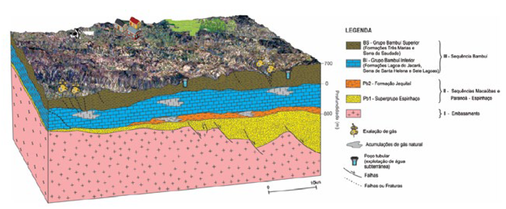

Cap. 3.7 - Bacia do São Francisco e a Bacia do Parnaíba

Resumo em Português
A Bacia do Parnaíba mostrou ser o principal play para gás onshore no país, pois sete campos foram descobertos próximo ao depocentro na porção meio norte da bacia e o campo Parque dos Gaviões é o bloco com as maiores e mais recentes descobertas. Os sistemas de fraturamento e falhamento reativaram estruturas do embasamento e foram importantes tanto para a migração do hidrocarboneto, como para a colocação dos corpos ígneos máficos De Miranda et al. (2018). As profundidades das janelas de maturação ideal para óleo e gás encontram-se a partir de 1.100 a 1.500 m da superfície, principalmente na porção centro-norte da bacia. Em análise ao sistema de Informações de Águas Subterrâneas (SIAGAS, CPRM, 2020), existem 36.664 poços, sendo que 90% destes exploram aquíferos a profundidades inferiores a 180 m da superfície, em média de 103 m. As regiões onde se exploram aquíferos consideravelmente mais profundos estão no sul da bacia, no Vale do Gurgueia-PI, e no centro-oeste, entre Grajaú e Açailândia-MA, com máximos respectivos de 1241 m e 800 m da superfície. Há um distanciamento vertical, em geral, superior a 600 m entre aquíferos e reservatórios de hidrocarbonetos, principalmente na porção de maior potencial, no centro-norte da bacia, onde profundidade de maturação é de 1100 m a 1500 m (De Miranda et al., 2018). A Bacia Sedimentar do São Francisco exibe rochas armazenadoras a profundidades rasas, de até cerca de 400 m, com indícios de gás distribuídos por quase toda sua área e ocorrências localizadas de exsudações associadas a estruturações tectônicas profundas. Os aquíferos predominantes abrangem os tipos fraturados associados aos quartzitos e metapelitos das e cársticos, relacionados à sequência Bambuí. As elevadas produtividades (superiores a 100 m3/h) associam-se ao aquífero granular, sedimentos cretácicos do Grupo Urucuia, na porção norte, e do aquífero cárstico, na porção oeste. Preponderam, entretanto, aquíferos de produtividade baixa a localmente moderada (vazões de 10 a 50 m3/h). A importância da água subterrânea para a bacia é evidenciada pela existência de 10.243 poços tubulares cadastrados no banco de dados SIAGAS (CPRM, 2020). Perfis geológicos desses poços apontam a presença de aquíferos cársticos a profundidades de até 250 metros, máximo atingido na perfuração.